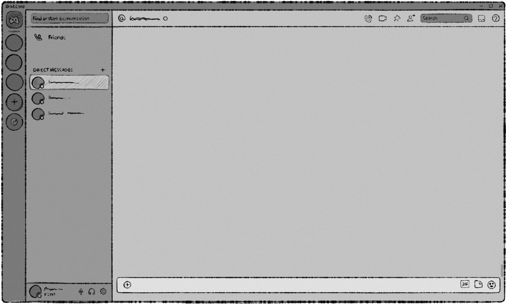
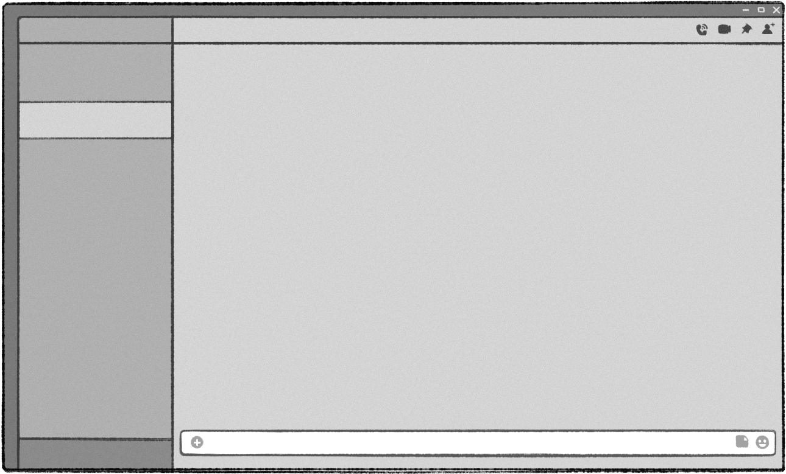
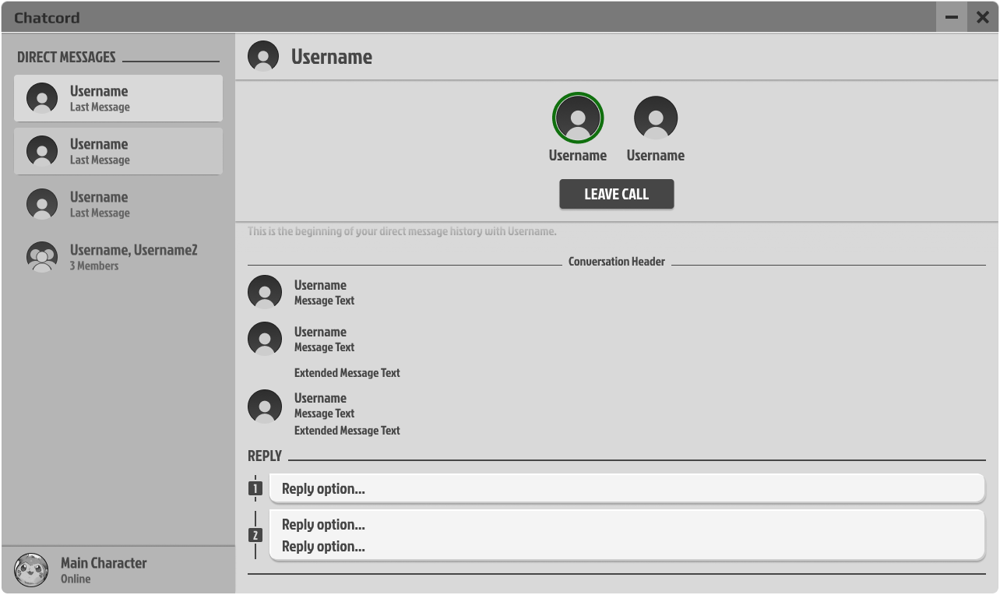
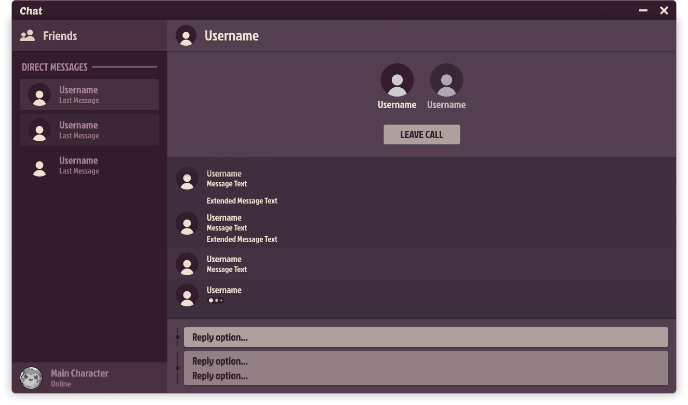
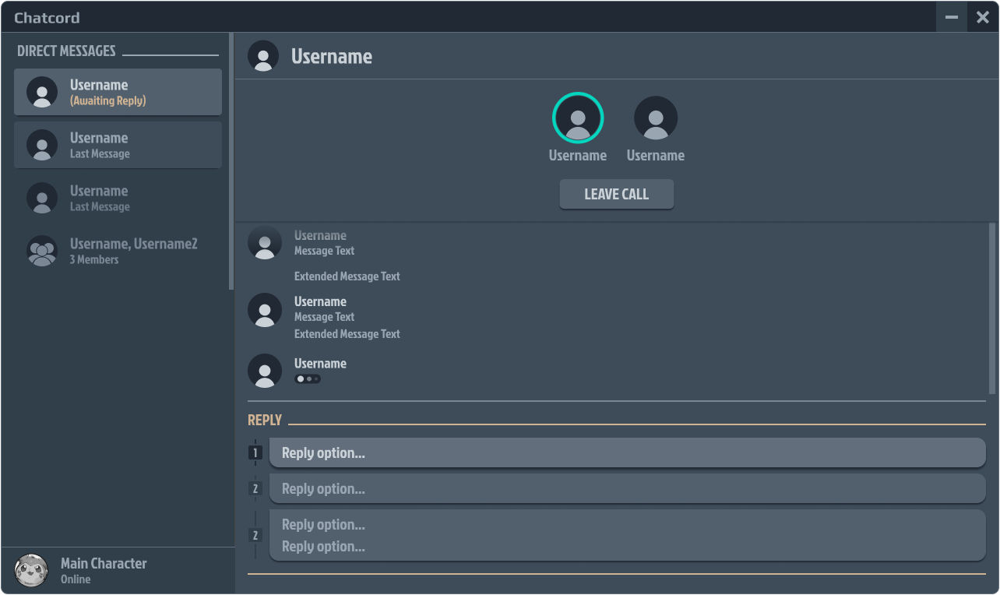
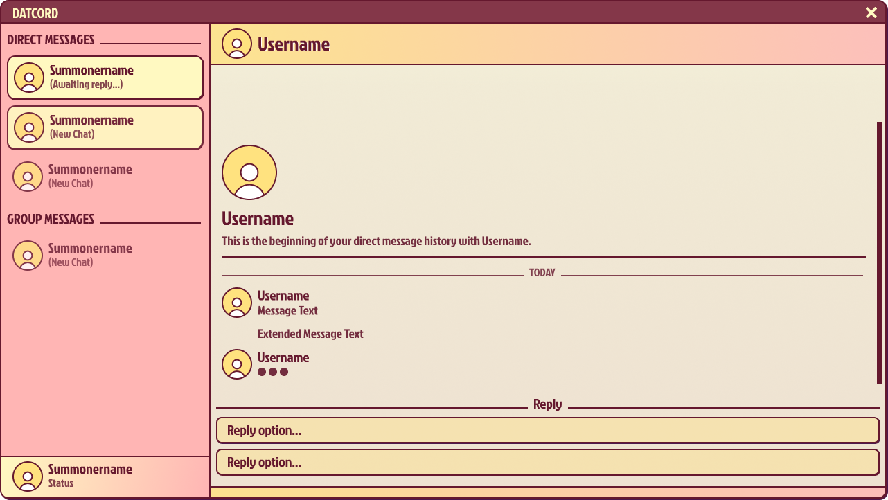
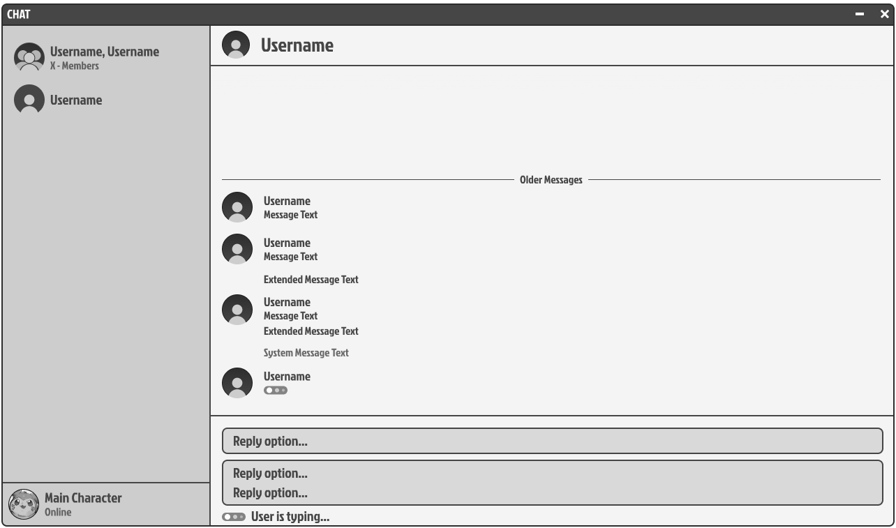
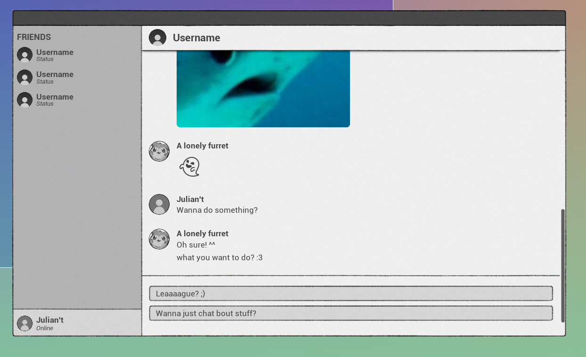
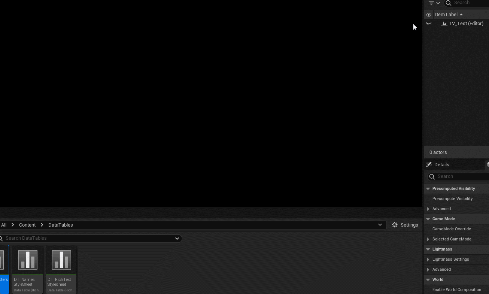
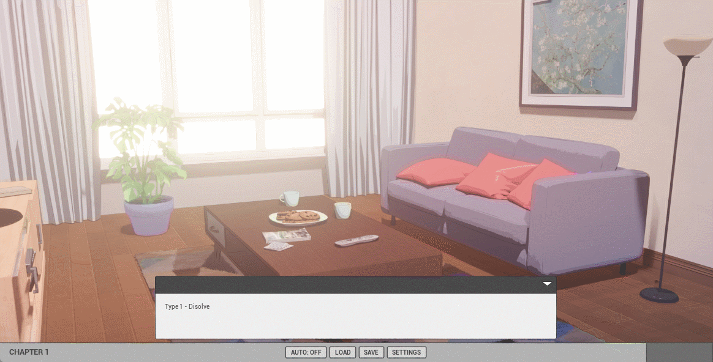

Catfished - A Visual Novel Game
My Role(s)
Solo Developer
Tools
Unity, Unreal Engine 5, Figma, Fungus, Ink
Time
From 2019 - Ongoing
Team size
Solo
I wrote a short novel that I'm quite fond of but felt the story would be more suited for a different medium.
The story? A romance featuring two young adult guys who meet through video games and start developing a close relationship.
The catch? Both are pretending to be a girl and desperate to keep that fact a secret.
Catfished is a solo passion-project I started after finishing the first story draft in 2019.
The core concept is to make a visual novel style game that takes place on a computer desktop.
Being a long lived project, it has seen many iterations and versions.
Remaking it in any new software I’m trying has become a bit of a habit of mine.
It's a fairly effective way to learn though, doing something familiar in an unfamiliar tool.
It’s helped me build a lot of the UI habits I have and motivated me to keep learning and improving myself both as a person and creator.
I genuinely love creating.
A long journey with many bumps
TLDR: I’m an idiot. Ask people for help. Kill your darlings.
I started out with the plan of making a visual novel retelling of the novel I wrote with little deviation from the source.
My ambition for the project, as it often does for creators, grew overtime.
I imagined multiple different branches and endings, more involved interactions.
One of my biggest pitfalls was getting stuck in my own head and being afraid to get others input.
Once I actually reached out for advice I gained so much clarity from just explaining the problems I was having.
I was trying to find solutions to features I had tacked on but I didn’t really need.
I love the game Simulacra’s premise; the idea of going through someone’s device and trying to find clues about what happened to them is such an intriguing concept.
But Catfished isn’t a mystery horror game, it’s a cute linear romance story.
I don’t need to allow the player complete freedom and make all the apps functional with content.
There’s no point to it here. I’m trying to tell a linear story and that freedom would only introduce more issues I’d need to solve.
I want to make a game of my own inspired by Simulacra one day, but Catfished is not the place for it.
Realizing that and accepting that has helped remove a lot of unnecessary features I deemed must haves.
How we're going to structuring this
The project can be broken down into three distinct iterations, the earlier two developed in Unity whilst the current one in Unreal Engine 5. Alongside that there’s the UI design journey that has taken place overtime. To structure this somewhat I’ll break it into three different sections: UI design process, Unity implementation and Unreal Engine implementation.
The UI design iteration process
The first verion I ever made I drew on my iPad by sketching over a screenshot of Discord.
Second version: I removed the server list and other unneeded details. Did keep some of the icons to fill the empty space. The empty headers would be populated in the engine so it could be changed dynamically.

For the third version I had discovered Figma and took the opportunity to learn how to use it whilst recreating the Discord layout I was now very familiar with.
I did start to simplify areas by removing even more unnecessary details.
I got into the habit of using a consistent value for padding and margins which made the design look more professional.
Previously the window had just been a background image with messages being spawned in but at this stage design wise for the project,
I wanted the game to be more interactive. The player should be able to go through different chats, open and close different applications,
so I needed to be more conscious throughout my design. This is one of the reasons I removed as many unnecessary details as possible.
If it wasn’t interactive it was a distraction and therefore should be removed. Buttons should be consistent and clear that it was interactive.
Forth version: I tried with rounder shapes and less outlines. Discord light is kind of cursed though.
Forth version different color palette. I can’t help but find light mode Discord cursed. I’m an avid darkmode user but it turns out dark mode has some interesting design nuggets. Was very interesting reading up on it and learning about research on how much contrast to have between the font and the background color to make it readable. After that I did some of my own experiments with darker color palettes.
 Fifth version: After that darkness I wanted to play around with some more fun and colorful palettes.
Sixth version: Up until now it’s all been fun and I’ve learnt a lot but does it actually fit the game? I do like the more clean digital looks of the Figma designs but my art style is more sketchy. I decided to go back to my roots and redraw the original style with the new simplified design.
Seventh version: I used the previous version as a template and drew over it, creating a sketchy version to use in the engine.
Unity Iteration
Fungus Implementation
For the first Unity iteration I used the Unity plugin Fungus. It’s a very powerful tool and has basically everything one would need to make a standard visual novel.
I was at the time very new to creating UI so I spent time getting used to all the different UI components,
went mad about four times trying to get the vertical and horizontal boxes to size to content properly,
in the process created monstrosities that shall never see the light of day. Important part was that I learnt a lot.
I simultaneously took on learning more C# so I could extend Fungus’ functionality and in doing so learnt a lot about code structure and reading other people's code.
In so, the first version prototype was born. Truly majestic.
As it was a visual novel I wanted to make I kept to the formula; a dialogue box to display the text.
The rest of the screen mainly became a history of past messages. Not super immersive but holding closely to what a visual novel is.
This version of the game does have a playable build!
A technical limitation was also a reason why I stuck to having the dialogue box.
Fungus’ Say command is what I was using for all the dialogue and the command displays text in a dialogue box.
I just added my own code to inform my system to spawn a message as well. I ended up making my own command using the Say command as a reference.
Doing this got me very familiar with how Fungus is programmed and made me comfortable with reading C# code and let me dip my toes into the world of custom editors.
I ended up making a few more custom commands to control what windows to show on screen.
And so, finally only the dialogue I specified would be shown in a dialogue box, the rest would be spawned on screen.
This system works fine and I could probably have made the entire game with it, but I personally wasn’t a fan of creating and editing content in Fungus’ node based system. It’s great for smaller projects but this bad boy was going to need a lot of text and I was already burnt out translating the first chapter. Spell checking was a nightmare because there was none and I can’t spell to save my life. I wanted to just write the story in a text editor, slap that into the game and let it run but that wasn’t possible with Fungus. You can export the existing nodes to a spreadsheet and edit that before importing it again, but a major limitation is you can’t add or remove nodes in the spreadsheet. Another big one is that the export didn’t treat my custom commands too nicely, which was an issue when about 90% of the content was using my custom commands. Now I could dive deep and try to extend Fungus further but I didn’t really feel up to the task nor found it worth my time.
This version also has a playable build of roughly the games first chapter!
Ink
I did spend some time making my own text parser but stopped when I found Ink, a text editor that handles the branching paths and logic for you. It also has a plugin for Unity so you can get the data line by line. Perfect.

This version of the game got the main windows working and a basic dialogue box. No portraits though.
Unreal Engine 5 Iteration
After working in Unreal Engine and getting familiar with coding in blueprints and UMG, I started anew.
And will you look at that, Ink just happens to have an Unreal Engine plugin! Well, kind of, it’s not as official as the Unity version but still. It works!
You can make round corners!! And materials specifically for UI.

Visual novel scene transitions.
